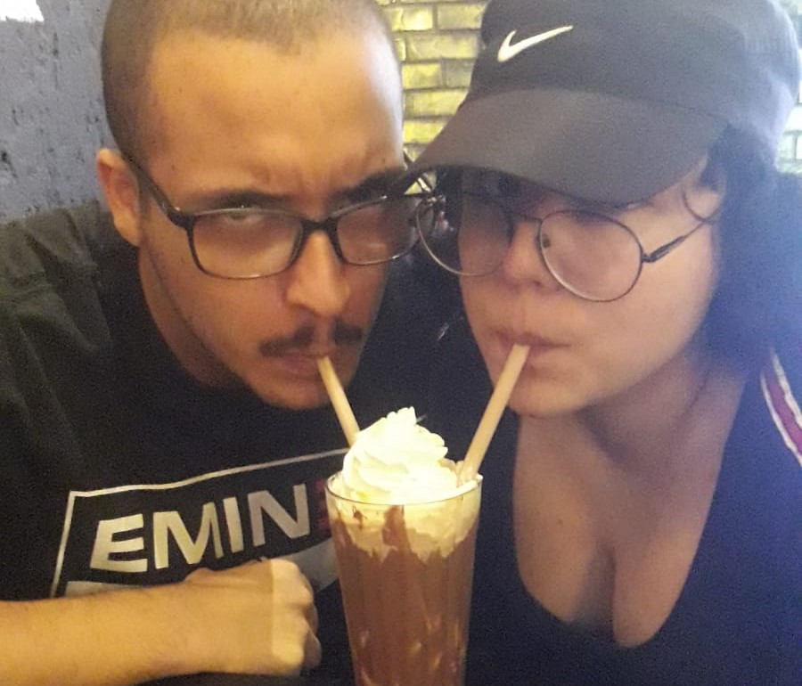
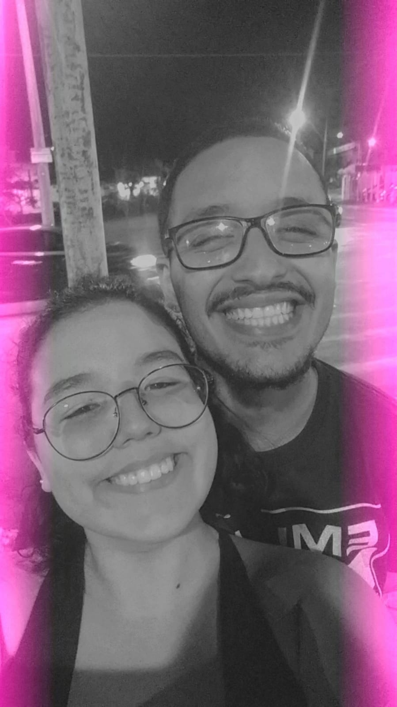
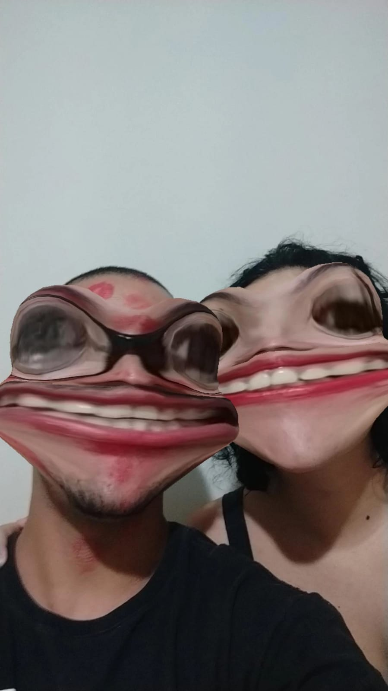
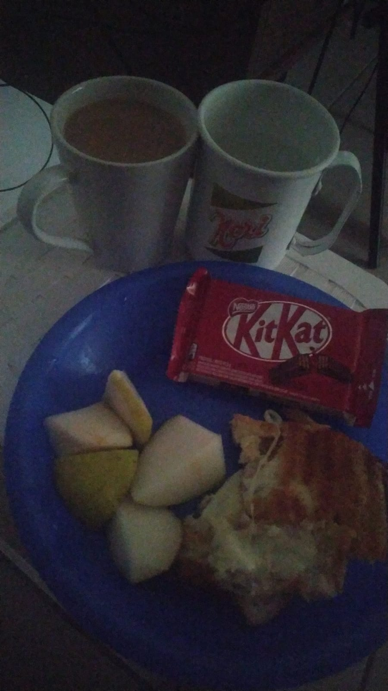
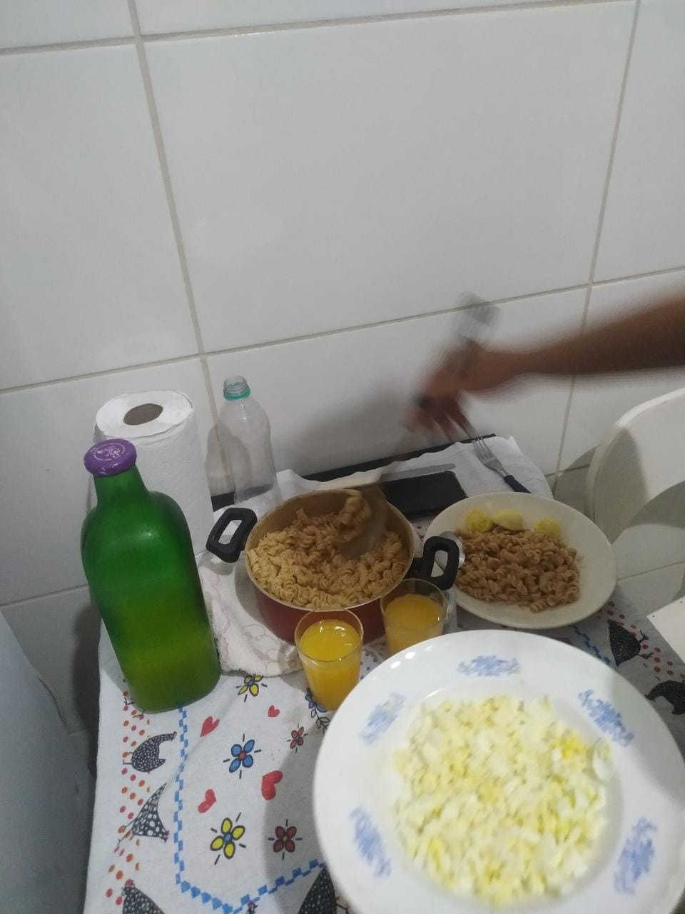
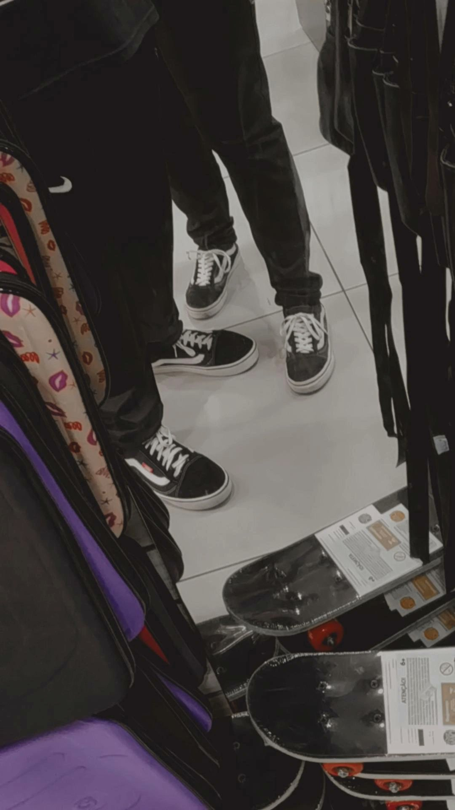
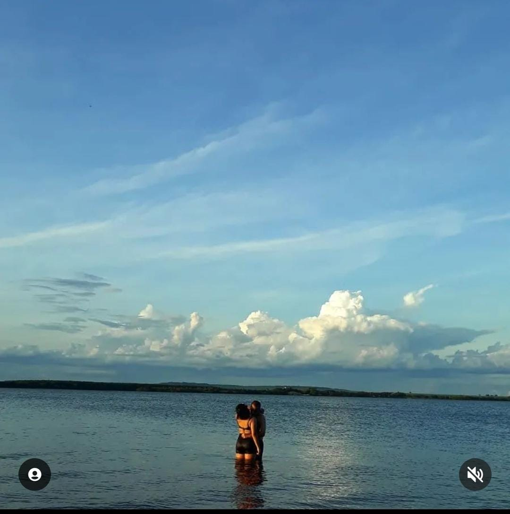

Meu amor, seja bem-vinda a este espaço dedicado a nós dois. Aqui, compartilhamos as curiosidades
mais engraçadas e surpreendentes do nosso relacionamento, para que possamos sempre nos lembrar dos
momentos
especiais que passamos juntos. É uma forma de registrar nossas memórias, nossos segredos e nossas
descobertas, e de mostrar ao mundo o quanto somos felizes juntos. Espero que goste e se encante
tanto
quanto eu com as histórias que temos para contar. Te amo!
Smash

Lembro-me até hoje do dia em que fomos pela primeira vez no Smash. Você estava com uma
camiseta preta e naquele dia sua mãe veio se justificando por não ter pago aquele dinheiro que
emprestei para seu trabalho de escola (boba, nem me lembrava). Quando comecei olhar aquele
cardápio,
pensei "Eita, os lanches lá da quebrada são bem mais baratos...". Precisei jantar naquele dia,
hamburguer microscópico, hehehehehe. E te digo, foi o melhor hamburguer que comi, apesar de não
matar
nem 5% da minha fome. Depois daquilo, nós nos beijamos na praça do Claretiano, na praça do Café
e
eu,
por fim, amei aqueles anéis de cebola que pedimos de acompanhamento.
"Amor, sorri"

Nunca, até onde me lembro, gostei de tirar fotos e muito menos de sorrir para as mesmas. Mas
desde
que você disse que achava meu sorriso bonito, passei a não ser tão resistente, arrisco dizer até
que
comecei gostar. Eu amo
estar sério (bandido posturado, cê sabe), mas é quase inevitável sorrir ao ver esse seu
maravilhoso
sorriso. Amo o quanto seus olhos se encolhem ao esticar dos seus lábios, é lindo, é magnífico.
Jureg e viona

Acredito que nossa estética seja resumida em um garoti bobão que ama dizer asneiras, tirar fotos
horríveis, fazer careta e chorar de rir por coisas mal-feitas. Por outro lado, você é a menina
bonita
que ama tirar fotos conceituais e ser super dedicada em tudo, além de ter capacidades artísticas
invejáveis. Fica meio zangada quando registro momentos nos quais está desarrumada, mas são
nesses
momentos que vejo o quão você é perfeita e radiante. Amo
nossas piadas internas como: "Tômili", "Nem te conto", "* é teu passado!", "Se eu te contar, teu
olho
enche
d'água". É espetacular quando rimos até encostar as nossas cabeças e tremer igual dois malucos,
quando
preciso pedir para você
controlar sua risada escandalosamente atraente. Eu simplesmente
adoro as trivialidades e coisas mais simples contigo, é muito gostoso rir com você.
Café da manhã na cama

Simplesmente amo os cuidados que temos um com o outro. Desde que começamos ficar juntos, você sempre
foi
muito solícita em me ajudar com minha casa e quaisquer problemas. Demonstra estar sempre disposta a
melhorar e conversar sobre coisas que possam me fazer mal. Em contra-partida, esforço-me para ser o
melhor homem do mundo para você. Essa foto, em específico, foi de uma vez que levei café na cama
para
você, mas houveram tantas vezes não registradas que você fez eu me sentir o homem mais sortudo do
cosmos
- como quando voltei da faculdade em semana de provas e você havia preparado um jantar para mim.
Macarrão aos sábados

Aos sábados cozinhamos macarrão juntos. Recordo-me vagamente de quando fui à sua casa para
ajudar
você
com um trabalho de escola, o qual envolvia cozinhar. Fizemos aquilo juntos pela primeira vez e
parece
ter se tornado um vício. O macarrão é só um detalhe, a sua companhia é a refeição do meu
coração.
Apesar
de nós quase sempre chegarmos perto da morte de diversas maneiras quando cozinhamos, quero ter
esse
tipo
de date para sempre com você, é perfeito (e ao final, comemos diretamente nas panelas,
hehehehe).
Somos o casal mais lindo

Gostaria de dedicar esse bloco a mostrar o quanto somos lindos juntos, acho que combinamos muito
um
com o outro.
Eu, honestamente, acho você a mulher mais bonita e angelical que pude admirar em toda minha
existência, amo como ficamos absurdamente
lindos ao lado um do outro. Pequepe muié, cê é um ataque cardíaco no meu peito de tanta
perfeição.
Miguelópolis

E assim, meu amor, finalizo esta seção lembrando a você de quando fomos para a praia de Miguelópolis.
Depois de diversas vezes termos nos visto no supermercado, ter ficado em diversas vídeo-chamadas com você,
algumas saídas pela cidade - especialmente na praça do café - e 2 pedidos de namoro recusados (sou insistente nos meus sonhos, hehehe), finalmente
havia conquistado seu meigo (e mimado) coração. Fomos viajar com sua família e foi a melhor experiência que vivi com alguém. Eu amei cada instante, desde nós
f*$*%*@ na areia da praia em vista do mar, até você pegando sapos pelo caminho de casa. Naquele ano novo bebemos uma mistura nada saudável de Corote com leite condensado,
você estava com um lindo vestido branco. Ao final da viagem, eu tinha certeza que você era a mulher da minha vida.
Clica aqui ó, minha gata, para continuar vendo!!